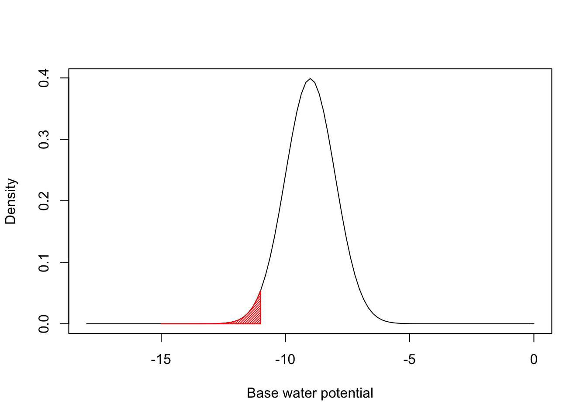
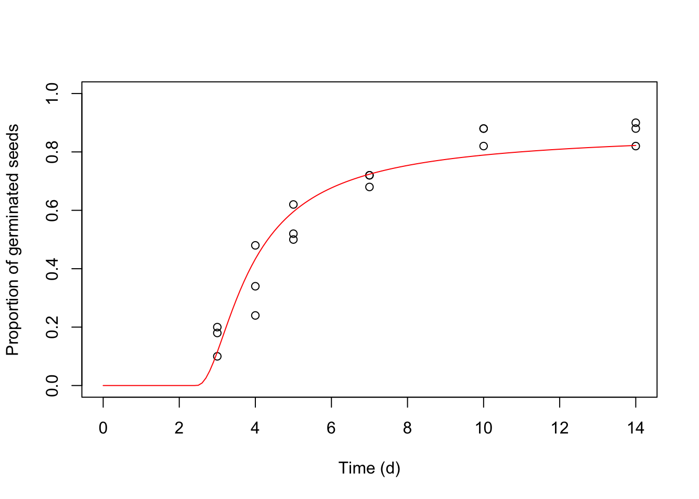

#Introduction {-}
One relevant task in seed biology is to model the progress to germination, depending on environmental conditions, mainly temperature and water availability. These models are usually known as hydro-time (HT), thermal-time (TT) and hydrothermal-time (HTT) models; they have usually been formulated as nonlinear regression models, where the proportion of germinated seeds is used as the response variable. In our previous papers, my collegues and I have often recommended that this is not an optimal solution (Onofri et al., 2018, 2010; Onofri et al., 2010); instead, we have advocated the use of time-to-event methods, which fully respect the actual manner in which data are acquired from germination assays. In contrast to nonlinear regression, time-to-event methods produce reliable estimates of parameters and standard errors (Ritz et al., 2013). In this vein, we have shown that HT, TT and HTT models can also be formulated into a time-to-event framework (Onofri et al., 2018).
However, we need to admit that there are several nonlinear regression models that have, so far, proven useful to describe the time course in the proportion of germinated seeds, as affected by temperature and humidity content in the environment. These models are based on realistic biological underpinnings and we do understand that biologists may be reluctant to abandon them, in favour of a relatively new modelling framework. As we are trying to build a unified approach to seed germination modelling, we feel that we should also include nonlinear regression models, together with the necessary facilities to perform reasonably correct analyses.
Let’s focus on hydro-time models (we’ll leave TT and HTT models for another note). The fundamental idea is that the germination of a single seed is driven by its capacity to absorb water from the substrate as quickly as possible. It all depends on its base water potential \(\Psi_b\): if this is low (much lower than the water potential in the environment), water flows in quickly, and the seed germinates in a short time. Otherwise, the seed germinate slowly, or it does not germinate at all, when its base water potential is equal to or higher than the environmental water potential.
We can model this by using the following equation (Bradford, 2002):
\[ GR = \left\{ \begin{array}{cc} \frac{\Psi - \Psi_b}{\theta_H} & if \quad \Psi_b < \Psi \\ 0 & if \quad \Psi_b \geq 0 \end{array} \right. \]
where GR is the germination rate for one seed (GR: the relative progress to germination accomplished in one day), \(\Psi_b\) is the base water potential for that seed (MPa), \(\Psi\) is the water potential in the substrate (MPa) and \(\theta_H\) is the hydrotime to germination (in MPa h or MPa d unit).
Considering that germination time is the inverse of GR, we can easily get to the following equation:
\[\Psi_b = \Psi - \frac{\theta_H}{t}\]
What does this equation tell us? Let’s assume that the hydrotime to germination is 10 \(MPa \, d\) and the environmental water potential is -1 \(MPa\). A single seed germinates in exactly one day, if its base water potential is $ -1 - 10/1 = -11 $. If the base water potential is higher, germination will take more than one day, if it is lower, germination will take less than one day. But now, the following questions come: how many seeds in a population will be able to germinate in one day? And in two days? And in \(n\) days?
We know that the seeds within a population do not germinate altogether in the same moment. According to Bradford (2002), the reason is that they have different values of base water potential. If the population is big enough, we can describe the variation of \(\Psi_b\) within the population by using some density function, possibly parameterised by way of a location (\(\mu\)) and a scale (\(\sigma\)) parameter:
\[ \Psi_b \sim \phi \left( \frac{\Psi_b - \mu}{\sigma} \right) \]
This is easier to understand if we make a specific example. Let’s assume that the distribution of \(\Psi_b\) values within the population is gaussian, with mean equal to \(\mu\) and standard deviation equal to \(\sigma\). Let’s also assume that the hydrotime parameter (\(\theta_H\)) is constant within the population. If we take, e.g., \(\mu = -9\) and \(\sigma = 1\), we have the situation depicted in the figure below.

The red left tail represents the proportion of seeds that germinate during the first day. This is easily determined by using the equations above, as the proportion of seeds with base water potentials equal to or lower than -11. It corresponds to 0.228 and it easily determined by using the gaussian Cumulative Density Function (CDF):
pnorm(-1 - 10/1, mean = -9, sd = 1)## [1] 0.02275013More generally, we can write:
\[ G(t, \Psi) = \Phi \left\{ \frac{\Psi - (\theta_T / tg) -\mu }{\sigma} \right\} \]
where \(\Phi\) is the selected cumulative distribution function. The above model returns the proportion of germinated seeds (G), as a function of time and water potential in the substrate (Bradford, 2002). The response variable is the proportion of germinated seeds; therefore, this model is usually fit by nonlinear regression, after turning the observed counts of germinated seeds into proportions.
We implemented this model in R as the function ‘HTnorm()’. This function is available within the ‘drcSeedGerm’ package (insert citation) and it is meant to be used with the ‘drm()’ function, in the ‘drc’ package (Ritz et al., 2015).
However, we did not stop here. More recent work has shown that the distribution of base water potential within the population may not be gaussian. Therefore, we implemented most of the models suggested by Mesgaran et al. (2013); in all, we implemented HT models based on the following distributions for base water potential:
The equations are given at the end of this note. All distributions are parameterised by using location and scale parameters; for gaussian, logistic and log-logistic distributions, the location parameter corresponds to the median base water potential within the population (\(\Psi_{b(50)}\)). For the gaussian distribution, the scale parameter corresponds to the standard deviation of \(\Psi_b\), that is \(\sigma_{\Psi b}\).
Distributions based on logarithms (the log-logistic and all other distributions thereafter) are only defined for positive amounts. On the contrary, we know that base water potential is mostly negative. Therefore, shifted distributions need to be used, by introducing a shifting parameter \(\delta\) which ‘moves’ the distribution to the left, along the x-axis, so that negative values are possible (Mesgaran et al., 2013).
The germination of rapeseed (Brassica napus L. var. oleifera, cv. Excalibur) was tested at thirteen different water potentials (-0.03, -0.15, -0.3, -0.4, -0.5, -0.6, -0.7, -0.8, -0.9, -1, -1.1, -1.2, -1.5 MPa), which were created by using a polyethylene glycol solution (PEG 6000). For each water potential level, three replicated Petri dishes with 50 seeds were incubated at 20°C. Germinated seeds were counted and removed every 2-3 days for 14 days.
In our lab, data from germination assays are usually collected in the following form:
| Dish | Psi | nInit | 3 | 4 | 5 | 7 | 10 | 14 |
|---|---|---|---|---|---|---|---|---|
| 1 | 0.00 | 50 | 49 | 0 | 0 | 0 | 0 | 0 |
| 2 | 0.00 | 50 | 47 | 0 | 0 | 0 | 0 | 0 |
| 3 | 0.00 | 50 | 50 | 0 | 0 | 0 | 0 | 0 |
| 4 | -0.03 | 50 | 43 | 0 | 0 | 0 | 0 | 0 |
| 5 | -0.03 | 50 | 44 | 0 | 0 | 0 | 0 | 0 |
| 6 | -0.03 | 50 | 46 | 0 | 0 | 0 | 0 | 0 |
| 7 | -0.15 | 50 | 46 | 0 | 0 | 0 | 0 | 1 |
| 8 | -0.15 | 50 | 47 | 0 | 1 | 0 | 0 | 0 |
| 9 | -0.15 | 50 | 47 | 0 | 1 | 0 | 0 | 0 |
| 10 | -0.30 | 50 | 47 | 0 | 0 | 0 | 0 | 0 |
| 11 | -0.30 | 50 | 45 | 2 | 0 | 0 | 0 | 0 |
| 12 | -0.30 | 50 | 47 | 1 | 0 | 0 | 0 | 0 |
| 13 | -0.40 | 50 | 49 | 0 | 0 | 0 | 0 | 0 |
| 14 | -0.40 | 50 | 49 | 1 | 0 | 0 | 0 | 0 |
| 15 | -0.40 | 50 | 48 | 1 | 0 | 0 | 0 | 0 |
| 16 | -0.50 | 50 | 48 | 0 | 0 | 0 | 0 | 0 |
| 17 | -0.50 | 50 | 44 | 1 | 2 | 0 | 1 | 0 |
| 18 | -0.50 | 50 | 45 | 1 | 0 | 0 | 0 | 1 |
| 19 | -0.60 | 50 | 45 | 0 | 2 | 1 | 2 | 0 |
| 20 | -0.60 | 50 | 43 | 4 | 1 | 2 | 0 | 0 |
| 21 | -0.60 | 50 | 45 | 0 | 2 | 0 | 0 | 1 |
| 22 | -0.70 | 50 | 25 | 12 | 2 | 6 | 0 | 0 |
| 23 | -0.70 | 50 | 27 | 13 | 2 | 3 | 4 | 0 |
| 24 | -0.70 | 50 | 30 | 6 | 7 | 3 | 0 | 0 |
| 25 | -0.80 | 50 | 9 | 15 | 7 | 5 | 8 | 1 |
| 26 | -0.80 | 50 | 5 | 7 | 13 | 11 | 8 | 0 |
| 27 | -0.80 | 50 | 10 | 7 | 9 | 8 | 7 | 0 |
| 28 | -0.90 | 50 | 1 | 0 | 7 | 15 | 7 | 2 |
| 29 | -0.90 | 50 | 1 | 2 | 5 | 7 | 7 | 0 |
| 30 | -0.90 | 50 | 0 | 0 | 10 | 12 | 4 | 2 |
| 31 | -1.00 | 50 | 0 | 0 | 0 | 0 | 1 | 0 |
| 32 | -1.00 | 50 | 0 | 0 | 0 | 0 | 3 | 0 |
| 33 | -1.00 | 50 | 0 | 0 | 0 | 0 | 3 | 0 |
| 34 | -1.10 | 50 | 0 | 0 | 0 | 0 | 0 | 0 |
| 35 | -1.10 | 50 | 0 | 0 | 0 | 0 | 0 | 0 |
| 36 | -1.10 | 50 | 0 | 0 | 0 | 0 | 0 | 0 |
| 37 | -1.20 | 50 | 0 | 0 | 0 | 0 | 0 | 0 |
| 38 | -1.20 | 50 | 0 | 0 | 0 | 0 | 0 | 0 |
| 39 | -1.20 | 50 | 0 | 0 | 0 | 0 | 0 | 0 |
| 40 | -1.50 | 50 | 0 | 0 | 0 | 0 | 0 | 0 |
| 41 | -1.50 | 50 | 0 | 0 | 0 | 0 | 0 | 0 |
| 42 | -1.50 | 50 | 0 | 0 | 0 | 0 | 0 | 0 |
Indeed, we have one row per Petri dish, with related water potential value and the counts observed at each assessment time. First of all, we need to transform the dataset in a form that is useful for nonlinear regression. I.e., we need to have one row per each combination of dish and observation time and several columns, to list all necessary information, including the cumulative proportion of germinated seeds.
The original dataset is available within the ‘drcSeedGerm’ package; it can be transformed by using the ‘makeNlin()’ function contained in the same package.
library(drcSeedGerm)
data(rapeOr)
rape <- makeNlin(rapeOr[,4:9], rapeOr[,1:2], rapeOr$nInit, c(3, 4, 5, 7, 10, 14))
head(rape, 10)## Dish Psi Time propCum
## 1 1 0 3 0.98
## 2 1 0 4 0.98
## 3 1 0 5 0.98
## 4 1 0 7 0.98
## 5 1 0 10 0.98
## 6 1 0 14 0.98
## 7 2 0 3 0.94
## 8 2 0 4 0.94
## 9 2 0 5 0.94
## 10 2 0 7 0.94We can now fit all nonlinear HT models, considering all the possible distributions of base water potential. We would like to highlight that starting values are not necessary, as self-starting routines are alreay implemented for all models.
library(drc)
mod1 <- drm(propCum ~ Time + Psi, data = rape, fct = HTnorm())
mod2 <- drm(propCum ~ Time + Psi, data = rape, fct = HTL())
mod3 <- drm(propCum ~ Time + Psi, data = rape, fct = HTG())
mod4 <- drm(propCum ~ Time + Psi, data = rape, fct = HTLL())
mod5 <- drm(propCum ~ Time + Psi, data = rape, fct = HTW1())
mod6 <- drm(propCum ~ Time + Psi, data = rape, fct = HTW2())
AIC(mod1, mod2, mod3, mod4, mod5, mod6)## df AIC
## mod1 4 -733.3981
## mod2 4 -736.1286
## mod3 4 -775.4074
## mod4 5 -809.3213
## mod5 5 -800.8274
## mod6 5 -774.6877According to the Akaike’s Information Criterion (AIC; Akaike (1974)), we note that the gaussian distribution is the worse fitting among all candidate models, while the log-logistic is the best one. Let’s take a look at the value of estimated parameters.
summary(mod4)##
## Model fitted: Hydrotime model with log-logistic distribution of Psib (Mesgaran et al., 2013)
##
## Parameter estimates:
##
## Estimate Std. Error t-value p-value
## thetaH:(Intercept) 0.7626110 0.0226434 33.679 < 2.2e-16 ***
## delta:(Intercept) 1.1120616 0.0132172 84.137 < 2.2e-16 ***
## Psib50:(Intercept) -0.9762636 0.0046089 -211.820 < 2.2e-16 ***
## sigma:(Intercept) 0.4181350 0.0395473 10.573 < 2.2e-16 ***
## ---
## Signif. codes: 0 '***' 0.001 '**' 0.01 '*' 0.05 '.' 0.1 ' ' 1
##
## Residual standard error:
##
## 0.04799896 (248 degrees of freedom)Previous papers have shown that standard errors obtained with a nonlinear regression fit may be strongly underestimated (Ritz et al., 2013). More accurate standard errors can be obtained by using either a fully iterated delete-a-group jackknike estimator (Onofri et al., 2014) or a cluster-robust sandwich estimator. Both can be calculated by using either the function ‘jackGroupSE()’ in the ‘drcSeedGerm’ package, or the function ‘coeftest’, together with the facilities provided in the ‘drc’, ‘sandwich’ and ‘lmtest’ packages (Berger et al., 2017; Ritz et al., 2015; Zeileis and Hothorn, 2002).
#library(devtools)
#install_github("OnofriAndreaPG/drcSeedGerm")
library(sandwich); library(lmtest)
jack <- jackGroupSE(mod4, data = rape, cluster = rape$Dish)## [1] "Deleting group 1 and refitting"
## [1] 1
## [1] "Deleting group 2 and refitting"
## [1] 2
## [1] "Deleting group 3 and refitting"
## [1] 3
## [1] "Deleting group 4 and refitting"
## [1] 4
## [1] "Deleting group 5 and refitting"
## [1] 5
## [1] "Deleting group 6 and refitting"
## [1] 6
## [1] "Deleting group 7 and refitting"
## [1] 7
## [1] "Deleting group 8 and refitting"
## [1] 8
## [1] "Deleting group 9 and refitting"
## [1] 9
## [1] "Deleting group 10 and refitting"
## [1] 10
## [1] "Deleting group 11 and refitting"
## [1] 11
## [1] "Deleting group 12 and refitting"
## [1] 12
## [1] "Deleting group 13 and refitting"
## [1] 13
## [1] "Deleting group 14 and refitting"
## [1] 14
## [1] "Deleting group 15 and refitting"
## [1] 15
## [1] "Deleting group 16 and refitting"
## [1] 16
## [1] "Deleting group 17 and refitting"
## [1] 17
## [1] "Deleting group 18 and refitting"
## [1] 18
## [1] "Deleting group 19 and refitting"
## [1] 19
## [1] "Deleting group 20 and refitting"
## [1] 20
## [1] "Deleting group 21 and refitting"
## [1] 21
## [1] "Deleting group 22 and refitting"
## [1] 22
## [1] "Deleting group 23 and refitting"
## [1] 23
## [1] "Deleting group 24 and refitting"
## [1] 24
## [1] "Deleting group 25 and refitting"
## [1] 25
## [1] "Deleting group 26 and refitting"
## [1] 26
## [1] "Deleting group 27 and refitting"
## [1] 27
## [1] "Deleting group 28 and refitting"
## [1] 28
## [1] "Deleting group 29 and refitting"
## [1] 29
## [1] "Deleting group 30 and refitting"
## [1] 30
## [1] "Deleting group 31 and refitting"
## [1] 31
## [1] "Deleting group 32 and refitting"
## [1] 32
## [1] "Deleting group 33 and refitting"
## [1] 33
## [1] "Deleting group 34 and refitting"
## [1] 34
## [1] "Deleting group 35 and refitting"
## [1] 35
## [1] "Deleting group 36 and refitting"
## [1] 36
## [1] "Deleting group 37 and refitting"
## [1] 37
## [1] "Deleting group 38 and refitting"
## [1] 38
## [1] "Deleting group 39 and refitting"
## [1] 39
## [1] "Deleting group 40 and refitting"
## [1] 40
## [1] "Deleting group 41 and refitting"
## [1] 41
## [1] "Deleting group 42 and refitting"
## [1] 42sand <- coeftest(mod4, vcov = vcovCL, cluster = rape$Dish)jack## Estimate SE Robust SE
## thetaH:(Intercept) 0.7626110 0.022643351 0.04831402
## delta:(Intercept) 1.1120616 0.013217240 0.02788956
## Psib50:(Intercept) -0.9762636 0.004608929 0.01112274
## sigma:(Intercept) 0.4181350 0.039547327 0.10004483sand##
## t test of coefficients:
##
## Estimate Std. Error t value Pr(>|t|)
## thetaH:(Intercept) 0.7626110 0.0292557 26.0671 < 2.2e-16 ***
## delta:(Intercept) 1.1120616 0.0278818 39.8848 < 2.2e-16 ***
## Psib50:(Intercept) -0.9762636 0.0068442 -142.6404 < 2.2e-16 ***
## sigma:(Intercept) 0.4181350 0.0821988 5.0869 7.187e-07 ***
## ---
## Signif. codes: 0 '***' 0.001 '**' 0.01 '*' 0.05 '.' 0.1 ' ' 1Standard errors from nonlinear regression confirm to be smaller than sandwich and jackknife SEs. These latter two are very similar, although jackknife SEs are slightly higher.
We might be interested in getting the GR values for a certain percentile (e.g. GR50, GR30), which is easily accomplished by using the ‘GR()’ function in ‘drcSeedGerm’. Likewise, if we are interested in the germination times for a certain percentile (e.g. T50, T30), we can use the ‘GTime()’ function in the same package. In the code below, we request the GR30, GR50 and GR70, as well as T30, T50 amd T70, for a water potential level of 0 MPa.
#GRate(mod4, respLev=c(30, 50, 70), Psi=0, vcov. = vcovCL)
#GTime(mod4, respLev=c(30, 50, 70), Psi=0, vcov. = vcovCL)Both functions are wrappers for the ‘ED()’ function in ‘drc’. These wrappers reverse the behaviour of the ‘ED()’ function, in the sense that they consider the percentiles for the whole population, including the ungerminated fraction. That is, the, e.g., T50 would be the time to 50% germination; if this germination level is not reached at all, the function returns infinity. We believe that, with germination assays, considering the percentiles for the whole population is more meaningful for comparing different populations. Again, the use of cluster-robust standard errors is highly recommended.
We can also make predictions about the germinated proportion for a certain time and water potential level. The code below returns the maximum germinated proportion at -1.5, -0.75, and 0 MPa.
predictSG(mod4, se.fit=T, vcov. = vcovCL,
newdata = data.frame(Time=c(10, 10, 10),
Psi=c(-1.5, -0.75, 0))
)## Prediction SE
## [1,] 5.300470e-13 2.552884e-12
## [2,] 8.556511e-01 6.633364e-03
## [3,] 9.923023e-01 2.854223e-03Predictions may also be used to plot graphs.

#Detail on the equations
The equation for the model based on gaussian distribution has already been presented before. Here, we show all other equations, as implemented in our package.
\[ G(t, \Psi) = \frac{1}{1 + exp \left[ - \frac{ \Psi - \left( \theta _H/t \right) - \Psi_{b(50)} } {\sigma} \right] }\]
\[ G(t, \Psi) = \exp \left\{ { - \exp \left[ { - \left( {\frac{{\Psi - (\theta _H / t ) - \mu }}{\sigma }} \right)} \right]} \right\} \]
\[ G(t, \Psi) = \frac{1}{1 + \exp \left\{ \frac{ \log \left[ \Psi - \left( \frac{\theta _H}{t} \right) + \delta \right] - \log(\Psi_{b50} + \delta) }{\sigma}\right\} }\]
\[ G(t, \Psi) = exp \left\{ - \exp \left[ - \frac{ \log \left[ \Psi - \left( \frac{\theta _H}{t} \right) + \delta \right] - \log(\Psi_{b50} + \delta) }{\sigma}\right] \right\}\]
\[ G(t, \Psi) = 1 - exp \left\{ - \exp \left[ \frac{ \log \left[ \Psi - \left( \frac{\theta _H}{t} \right) + \delta \right] - \log(\Psi_{b50} + \delta) }{\sigma}\right] \right\}\]
Akaike, H., 1974. A new look at the statistical model identification. IEEE Transactions on Automatic Control 19, 716–723.
Berger, S., Graham, N., Zeileis, A., 2017. Various versatile variances: An object-oriented implementation of clustered covariances in R. Working Paper 2017-12, Working Papers in Economics and Statistics, Research Platform Empirical and Experimental Economics, Universität Innsbruck.
Bradford, K., 2002. Applications of hydrothermal time to quantifying and modeling seed germination and dormancy. Weed Science 50, 248–260.
Mesgaran, M.B., Mashhadi, H.R., Alizadeh, H., Hunt, J., Young, K.R., Cousens, R.D., 2013. Importance of distribution function selection for hydrothermal time models of seed germination. Weed Research 53, 89–101.
Onofri, A., Benincasa, P., Mesgaran, M.B., Ritz, C., 2018. Hydrothermal-time-to-event models for seed germination. European Journal of Agronomy 101, 129–139.
Onofri, A., Carbonell, E., Piepho, H., Mortimer, A.M., Cousens, R.D., 2010. Current statistical issues in weed research. Weed Research 50, 5–24.
Onofri, A., Gresta, F., Tei, F., 2010. A new method for the analysis of germination and emergence data of weed species. Weed Research 50, 187–198.
Onofri, A., Mesgaran, M., Neve, P., Cousens, R., 2014. Experimental design and parameter estimation for threshold models in seed germination. Weed Research 54, 425–435.
Ritz, C., Baty, F., Streibig, J.C., Gerhard, D., 2015. Dose-response analysis using r. PLOS ONE 10.
Ritz, C., Pipper, C.B., Streibig, J.C., 2013. Analysis of germination data from agricultural experiments. European Journal of Agronomy 45, 1–6.
Zeileis, A., Hothorn, T., 2002. Diagnostic checking in regression relationships. R News 2, 7–10.